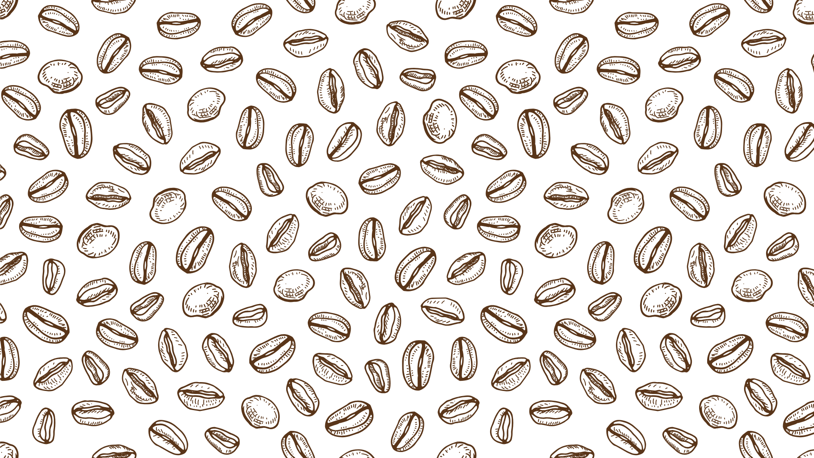

Nossos Produtos



Um espaço aconchegante para saborear o melhor café da região.
No Ana Rosa Café, acreditamos que cada cliente é parte integrante da nossa história. Por isso, dedicamo-nos a oferecer um atendimento acolhedor e personalizado, garantindo que cada visita seja uma experiência especial e memorável.
Com mais de 25 anos de tradição, estamos presentes no dia a dia dos moradores de Ribeirão Pires, apaixonados por um bom café. Nossa trajetória é marcada por um compromisso constante com a qualidade e a excelência, sempre buscando proporcionar momentos únicos aos nossos clientes.
Nossa paixão pelo café começa com a cuidadosa seleção de grãos especiais, moídos na hora para preservar todo o sabor e aroma que fazem cada xícara ser inesquecível. Além das nossas bebidas, oferecemos uma variedade de salgados e doces irresistíveis, com destaque para as nossas famosas quiches, preparadas com ingredientes frescos e de alta qualidade.
Convidamos você a visitar uma das nossas unidades e desfrutar de um ambiente acolhedor, onde o café é mais do que uma bebida – é uma experiência que une tradição, sabor e hospitalidade.
Nossas unidades:
Proveniente da região do Espirito Santo do Pinhal - SP, a altitudes entre 900m e 1220m, nosso café e um cafe especial e com 84 pontos, os grão são selecionados e 100% arábica. A torra é clara a média para preservar o melhor do café. O processo de produção segue um rigoroso controle de qualidade, garantindo o sabor especial que só quem já provou conhece.